16デザイン一覧
デザインをクリックすると写真と仕様が表示されます。
 107
107 108
108 109
109 110
110 111
111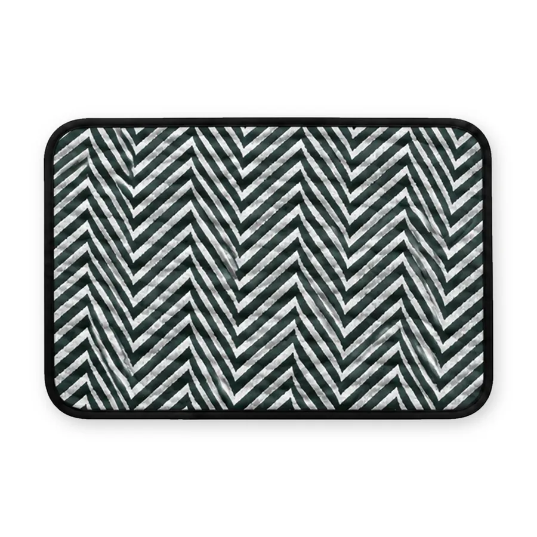
112 113
113 114
114 115
115 116
116 117
117 118
118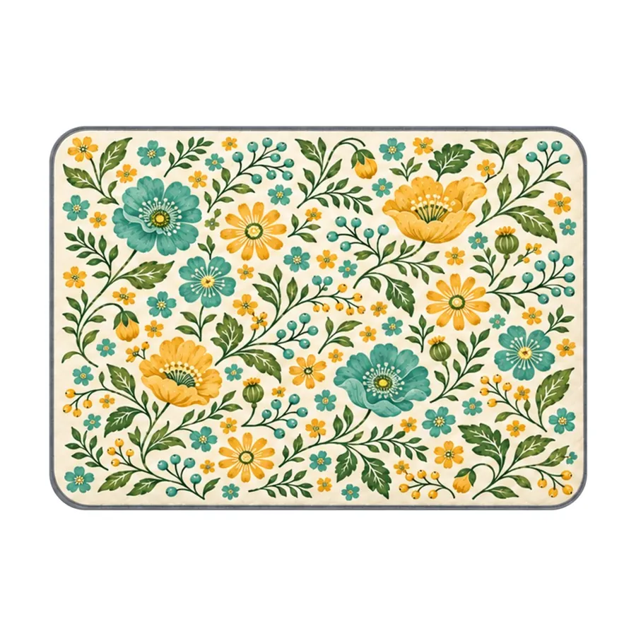
119 120
120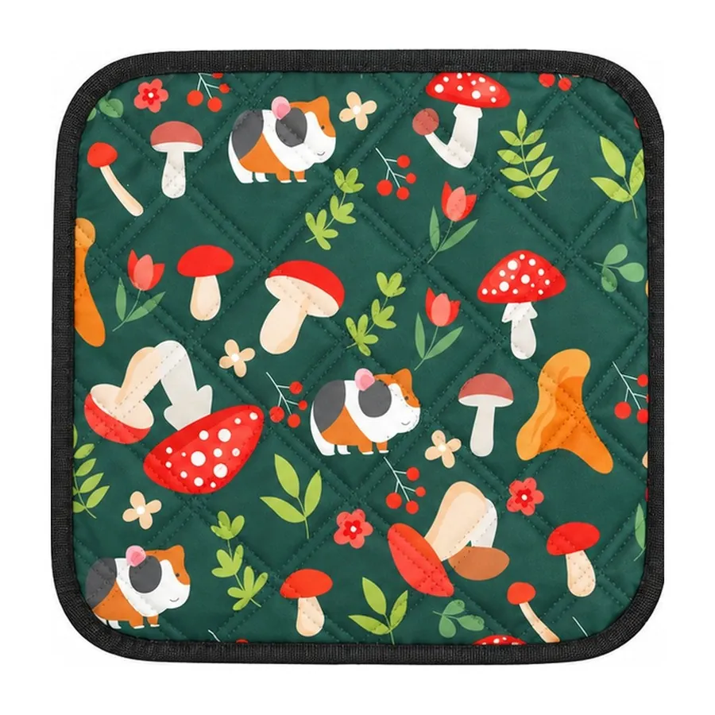
121 122
122床、ケージ、ソファ、ベッド用パッド
14デザイン、16品番。
107 123
123 124
124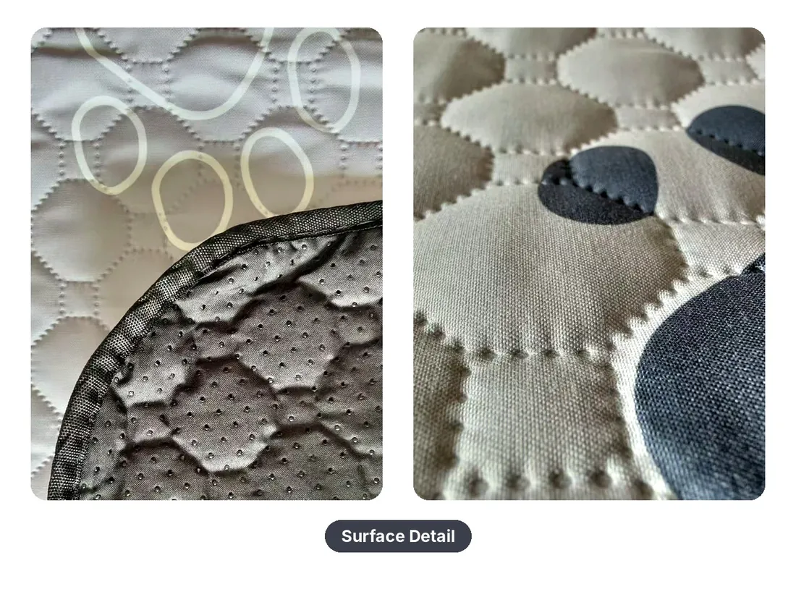
125 126
126肉球柄、ライトグレー
ライトグレーの肉球柄、八角形エンボス、布テープ縁取りの正方形パッド。黒い裏地のシリコンドットでタイルや木の床でもずれません。
| サイズ | 23 × 23 in (58 × 58 cm) |
|---|---|
| デザイン | ライトグレーに犬・猫・肉球のプリント |
| 表地 | ポリエステル、吸水 |
| キルティング | 八角格子、超音波エンボス |
| 縁 | 布テープ縁取り |
| 裏面 | ポリエステル、シリコン滑り止めドット（直径2 mm、間隔1 cm） |
| 層 | 4 · TPU防水フィルム |
| 用途 | 子犬のトイレトレーニング、ケージ、床 |
108 127
127 128
128 129
129 130
130フェザー柄、ライラック
ライラックのフェザー柄とサークルキルティングのコンパクトなパッド。キャリー、ケージ、旅行に使えるサイズで、裏地は滑り止めドット付き。
| サイズ | 17 × 23 in (44 × 59 cm) |
|---|---|
| デザイン | ライラックに紫のフェザー柄 |
| 表地 | ポリエステル、吸水 |
| キルティング | サークルキルティング |
| 縁 | 布テープ縁取り |
| 裏面 | ポリエステル、シリコン滑り止めドット（直径2 mm、間隔1 cm） |
| 層 | 4 · TPU防水フィルム |
| 用途 | キャリー、ケージ、旅行 |
109 131
131 132
132 133
133 134
134赤ストライプ、スカラップ縁
赤白ストライプに菱形エンボス、織りテープ縁取りのスカラップ縁。装飾性がありながら、TPUフィルム入りの4層構造です。
| サイズ | 22 × 33 in (55 × 84 cm) |
|---|---|
| デザイン | 赤白ストライプ、スカラップ縁 |
| 表地 | ポリエステル、吸水 |
| キルティング | 菱形柄、超音波エンボス |
| 縁 | 織りテープ縁取り |
| 裏面 | ポリエステル、シリコン滑り止めドット（直径2 mm、間隔1 cm） |
| 層 | 4 · TPU防水フィルム |
| 用途 | インテリア、子犬のトイレトレーニング、床 |
110 135
135 136
136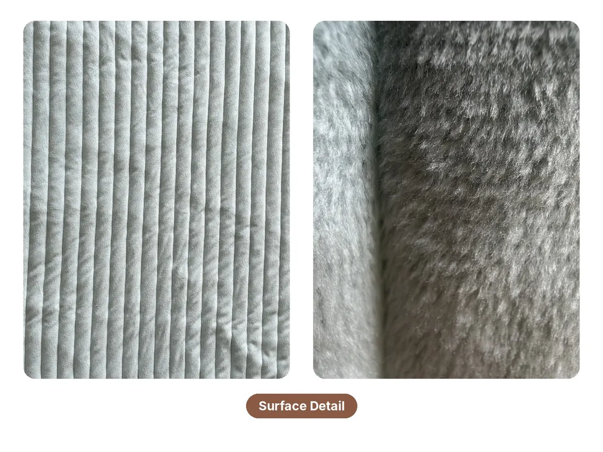
137 138
138ミント、円形、スカラップ縁
縦ステッチとスカラップ縁の円形ミントマット。撥水表地は液体が玉になって拭き取れ、しみ込んだ分はTPUフィルムが止めます。
| サイズ | Ø 35 in (Ø 90 cm) |
|---|---|
| デザイン | ミント、円形スカラップ縁 |
| 表地 | ポリエステル、撥水 |
| キルティング | 縦ステッチ |
| 縁 | 織りテープ縁取り |
| 裏面 | ポリエステル、シリコン滑り止めドット（直径2 mm、間隔1 cm） |
| 層 | 4 · TPU防水フィルム |
| 用途 | インテリア、子犬のトイレトレーニング、床 |
111 139
139 140
140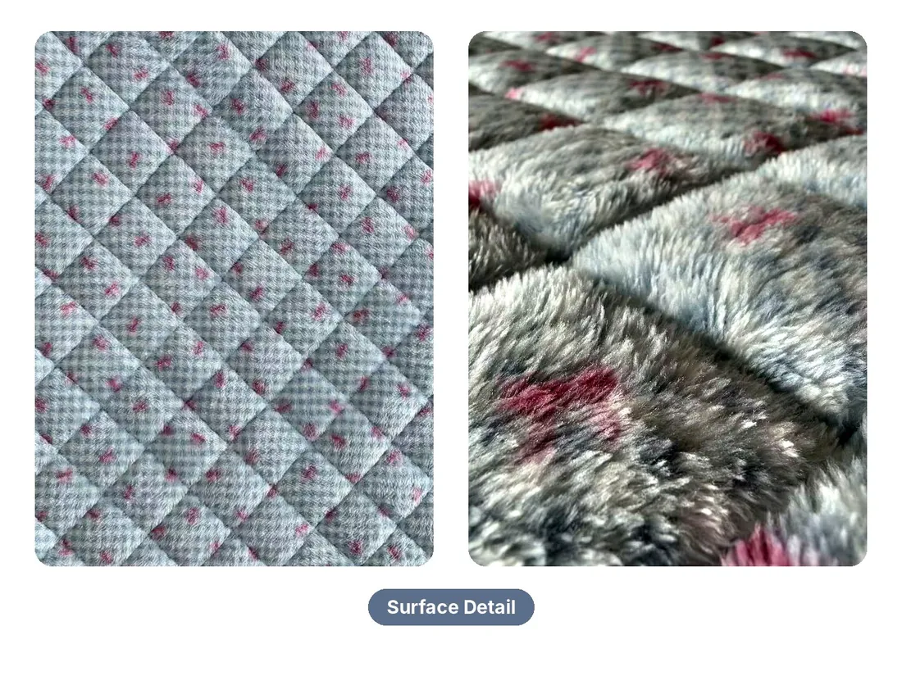
141 142
142チェック柄
チェック柄に菱形キルティング、織りテープ縁取り。撥水表地なので、こぼれを拭き取りたいソファや床に向きます。
| サイズ | 24 × 35 in (60 × 89 cm) |
|---|---|
| デザイン | チェック柄 |
| 表地 | ポリエステル、撥水 |
| キルティング | 菱形キルティング |
| 縁 | 織りテープ縁取り |
| 裏面 | ポリエステル、シリコン滑り止めドット（直径2 mm、間隔1 cm） |
| 層 | 4 · TPU防水フィルム |
| 用途 | ケージ、床、インテリア |
 143
143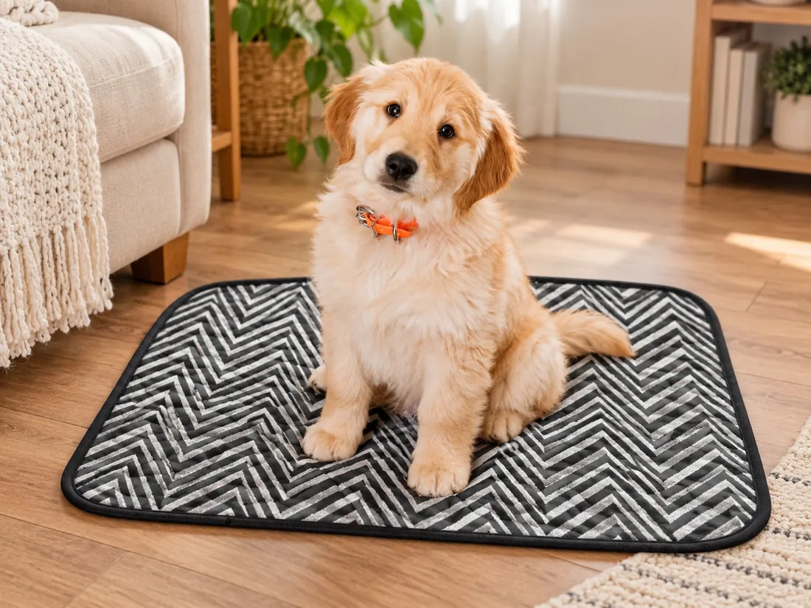
144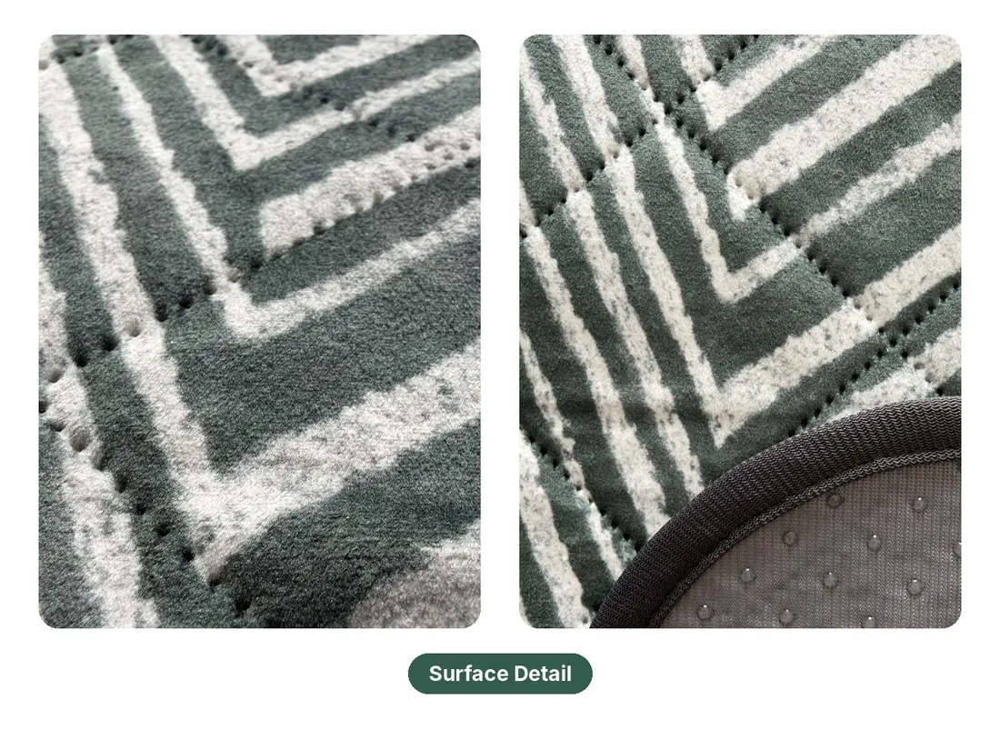
145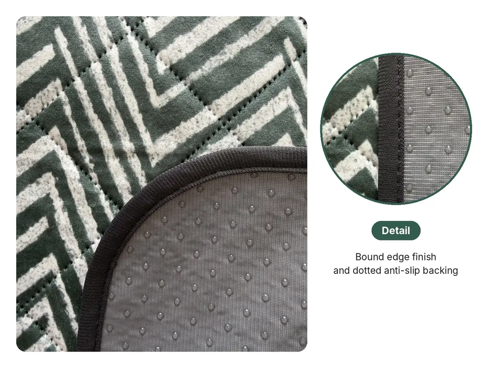
146グリーンシェブロン
デジタルプリントのグリーンシェブロンに菱形エンボス、織りテープ縁。2サイズ。グレーの裏地にシリコンドット。
| サイズ | 512006: 28 × 20 in (71 × 51 cm) 512007: 24 × 16 in (61 × 40.6 cm) |
|---|---|
| デザイン | グリーン×ホワイトのシェブロン、デジタルプリント |
| 表地 | ポリエステル、吸水 |
| キルティング | 菱形柄、超音波エンボス |
| 縁 | 織りテープ縁取り |
| 裏面 | ポリエステル、シリコン滑り止めドット（直径2 mm、間隔1 cm） |
| 層 | 4 · TPU防水フィルム |
| 用途 | 床、ケージ、ソファ |
113 147
147 148
148 149
149 150
150バーガンディ千鳥格子
デジタルプリントのバーガンディ千鳥格子に菱形エンボス、織りテープ縁。撥水表地で液体は玉になり拭き取れます。2サイズ。
| サイズ | 512008: 28 × 20 in (71 × 51 cm) 512009: 24 × 16 in (61 × 40.6 cm) |
|---|---|
| デザイン | バーガンディ×ホワイトの千鳥格子、デジタルプリント |
| 表地 | ポリエステル、撥水 |
| キルティング | 菱形柄、超音波エンボス |
| 縁 | 織りテープ縁取り |
| 裏面 | ポリエステル、シリコン滑り止めドット（直径2 mm、間隔1 cm） |
| 層 | 4 · TPU防水フィルム |
| 用途 | 床、ケージ、ソファ |
114 151
151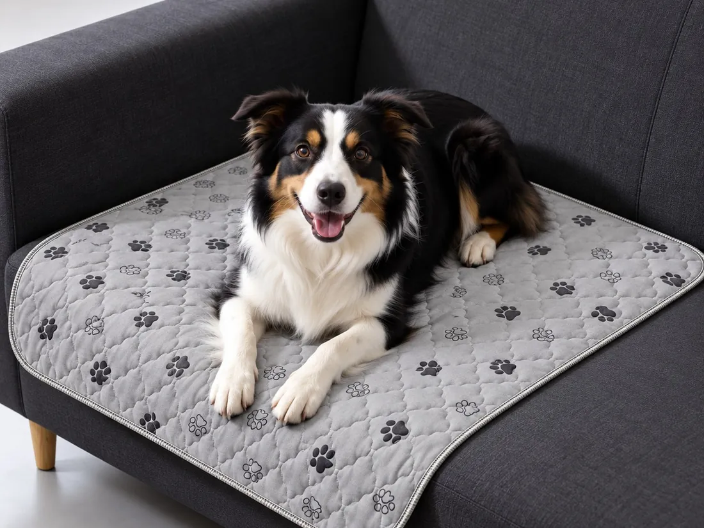
152 153
153 154
154グレー肉球柄
グレーの肉球柄に波形菱形キルティング、ロック縁。裏地には硬い床用の肉球形シリコン滑り止め。
| サイズ | 36 × 31 in (90 × 80 cm) |
|---|---|
| デザイン | グレーに濃色の肉球柄 |
| 表地 | ポリエステル、吸水 |
| キルティング | 波形菱形キルティング |
| 縁 | ロック縁 |
| 裏面 | ポリエステル、シリコン肉球形滑り止め |
| 層 | 4 · TPU防水フィルム |
| 用途 | 床、ケージ、ソファ |
115 155
155 156
156 157
157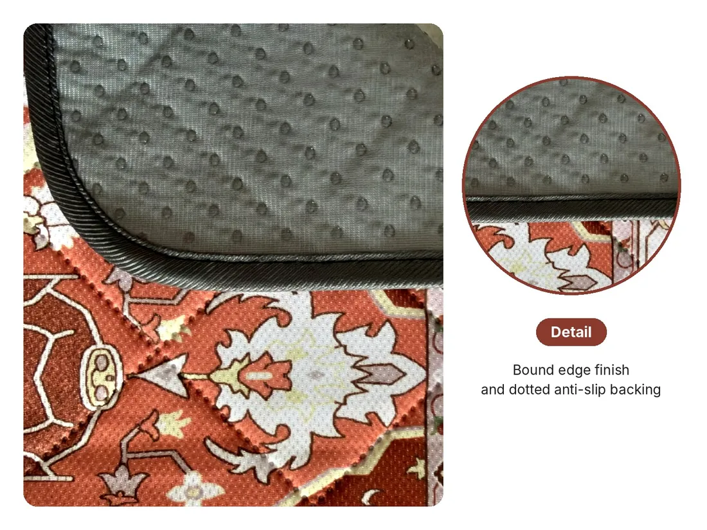
158ペルシャ絨毯柄、レッド
小さなラグのように見えるレッド×クリームのペルシャ絨毯柄。菱形エンボス、縁取り仕上げ。グレーのドット滑り止め裏地。
| サイズ | 24 × 19 in (62 × 47 cm) |
|---|---|
| デザイン | レッド×クリームのペルシャ絨毯柄 |
| 表地 | ポリエステル、吸水 |
| キルティング | 菱形柄、超音波エンボス |
| 縁 | 縁取り |
| 裏面 | ポリエステル、シリコン滑り止めドット（直径2 mm、間隔1 cm） |
| 層 | 4 · TPU防水フィルム |
| 用途 | ケージ、ベッド、床 |
116 159
159 160
160 161
161 162
162グレープラッシュ
やわらかなグレーのプラッシュ表地と縁取りの大判パッド。ベッドのように寝そべるのが好きな犬に。ダークグレーのドット滑り止め裏地。
| サイズ | 39 × 28 in (100 × 71 cm) |
|---|---|
| デザイン | グレープラッシュ |
| 表地 | ポリエステルプラッシュ、吸水 |
| キルティング | キルティングなし |
| 縁 | 縁取り |
| 裏面 | ポリエステル、シリコン滑り止めドット（直径2 mm、間隔1 cm） |
| 層 | 4 · TPU防水フィルム |
| 用途 | ケージ、ベッド、床 |
117 163
163 164
164 165
165 166
166ターコイズメダリオン
ターコイズのメダリオンラグ柄に菱形エンボス、白のロック縁。濃色のドット滑り止め裏地。
| サイズ | 24 × 18 in (61 × 46 cm) |
|---|---|
| デザイン | ターコイズのメダリオンラグ柄 |
| 表地 | ポリエステル、吸水 |
| キルティング | 菱形柄、超音波エンボス |
| 縁 | ロック縁 |
| 裏面 | ポリエステル、シリコン滑り止めドット（直径2 mm、間隔1 cm） |
| 層 | 4 · TPU防水フィルム |
| 用途 | ケージ、ベッド、床 |
118 167
167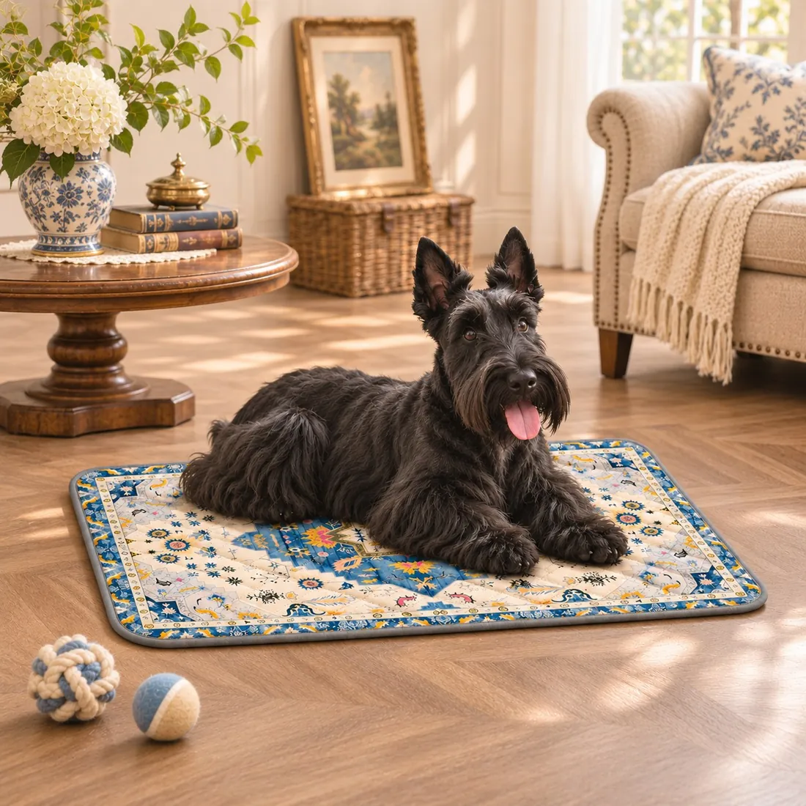
168 169
169 170
170ブルーヴィンテージラグ
ブルー、クリーム、淡いイエローのヴィンテージラグ柄。菱形エンボス、グレーの縁取り。ダークグレーのドット滑り止め裏地。
| サイズ | 36 × 24 in (92.5 × 62.5 cm) |
|---|---|
| デザイン | ブルー・クリーム・イエローのヴィンテージラグ柄 |
| 表地 | ポリエステル、吸水 |
| キルティング | 菱形柄、超音波エンボス |
| 縁 | 縁取り |
| 裏面 | ポリエステル、シリコン滑り止めドット（直径2 mm、間隔1 cm） |
| 層 | 4 · TPU防水フィルム |
| 用途 | ケージ、ベッド、床 |
 171
171 106
106ボタニカル柄
クリーム地にティールとゴールドの花柄。菱形キルティング、グレーの縁取り。ソファや大きなベッド向けのサイズ。
| サイズ | 30 × 40 in (75 × 102 cm) |
|---|---|
| デザイン | クリーム地にティールとゴールドの花柄 |
| 表地 | ポリエステル、吸水 |
| キルティング | 菱形キルティング |
| 縁 | 縁取り |
| 裏面 | ポリエステル、シリコン滑り止めドット（直径2 mm、間隔1 cm） |
| 層 | 4 · TPU防水フィルム |
| 用途 | ソファ、ベッド、ケージ、床 |
120 172
172 173
173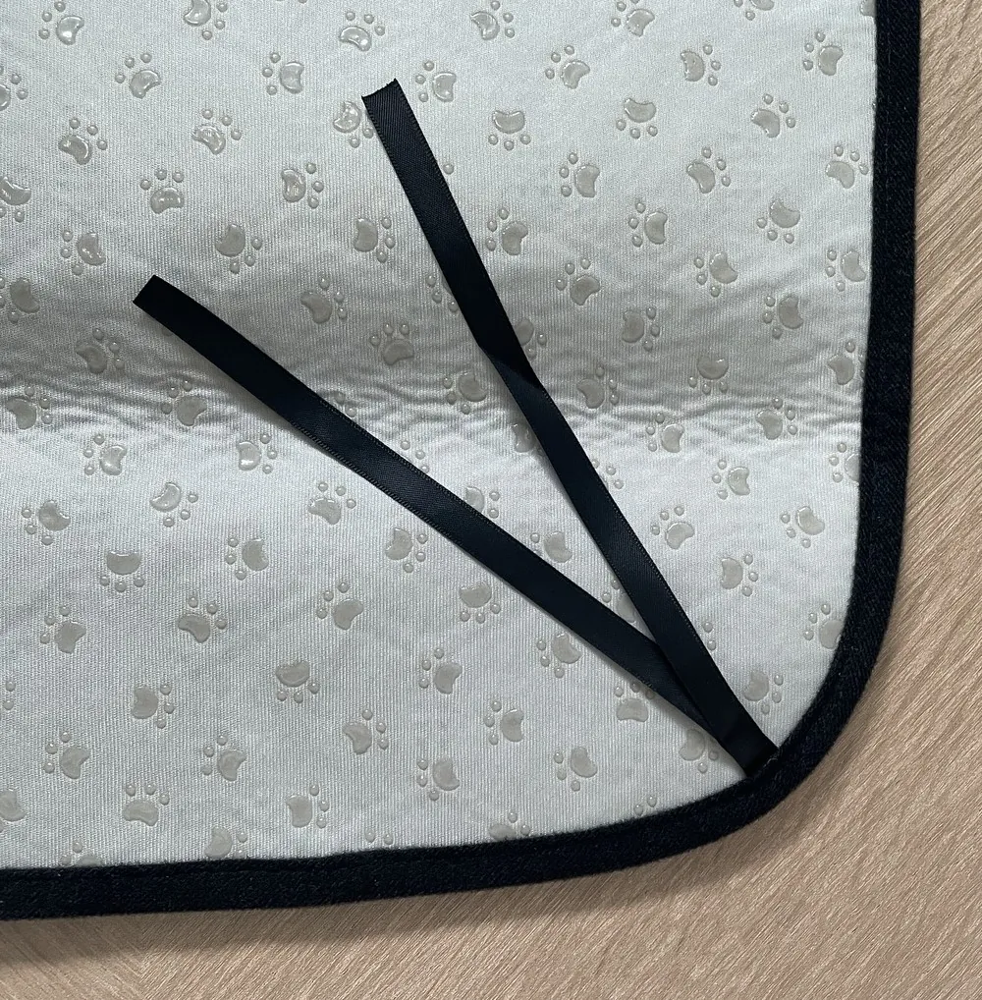
174イエローストライプ、ひも付き
イエロー×クリームのストライプに八角キルティング、黒の縁取り。6本の布ひもでソファ、ベッド、ケージ、車のシートに固定でき、裏地は肉球形シリコン滑り止め。
| サイズ | 42 × 28 in (106 × 72 cm) |
|---|---|
| デザイン | イエロー×クリームのストライプ |
| 表地 | ポリエステル、吸水 |
| キルティング | 八角キルティング |
| 縁 | 縁取り、黒 |
| 裏面 | ポリエステル、シリコン肉球形滑り止め |
| ひも | 布ひも6本（四隅4本、両側2本） |
| 層 | 4 · TPU防水フィルム |
| 用途 | ソファ、ベッド、ケージ、車のシート |
ハムスター・モルモット用ケージマット
 175
175 176
176 177
177ケージマット、きのこ柄
ハムスター、モルモットなど小動物用の洗えるケージシート。プリント表地、吸水コア、滑り止めドットで、ケージ掃除は取り替えるだけ。
| サイズ | 12 × 12 in (31 × 31 cm) |
|---|---|
| デザイン | ダークグリーンにきのこ柄 |
| 表地 | ポリエステル、吸水 |
| キルティング | 菱形柄、超音波エンボス |
| 縁 | 布テープ縁取り |
| 裏面 | ポリエステル、シリコン滑り止めドット（直径2 mm、間隔1 cm） |
| 層 | 4 · TPU防水フィルム |
| 用途 | ハムスター、モルモット、小動物のケージ |
122 178
178 179
179 180
180ケージマット、ハート柄
ハート柄のライトピンクの小さなケージマット。吸水コア、ドット滑り止め裏地付き。
| サイズ | 11 × 11 in (29 × 29 cm) |
|---|---|
| デザイン | ライトピンクにハート柄 |
| 表地 | ポリエステル、吸水 |
| キルティング | キルティングなし |
| 縁 | 布テープ縁取り |
| 裏面 | ポリエステル、シリコン滑り止めドット（直径2 mm、間隔1 cm） |
| 層 | 4 · TPU防水フィルム |
| 用途 | ハムスター、モルモット、小動物のケージ |
512パッドの内部構造
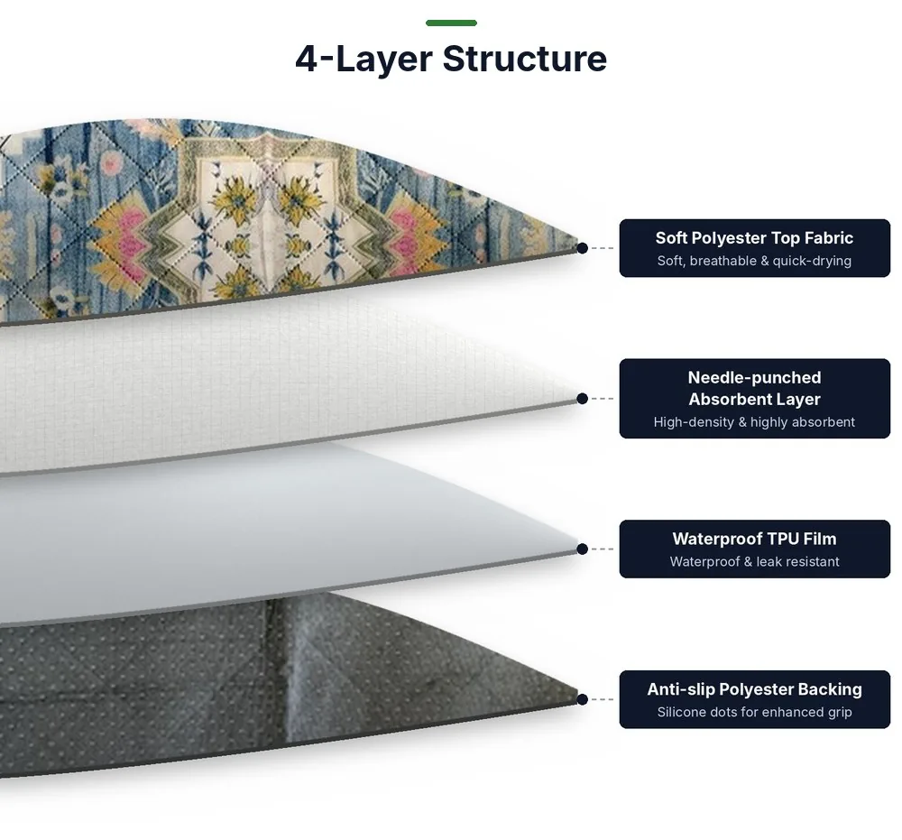
181すべてのデザインに共通の4層構造
デザインごとに変わるのは表地、キルティング、縁、サイズだけ。その下の層は共通です。
| 1 · 表地 | ポリエステル：吸水、撥水、プラッシュ |
|---|---|
| 2 · 吸収芯 | ニードルパンチ不織布、ポリエステル/レーヨン |
| 3 · 防水層 | TPUフィルム |
| 4 · 裏地 | ポリエステル、シリコンのドットまたは肉球形滑り止め |
| お手入れ | 洗濯機で洗えて繰り返し使える |
 182
182 183
1832種類の表地
吸水表地は液体をすぐにコアへ吸い込みます。子犬のトイレトレーニングやケージ向け。撥水表地は液体が玉になり拭き取れます。ソファ、ベッド、インテリア用に。どちらもTPUフィルムが床や家具を濡らしません。
貴社仕様の512シリーズ
106どのデザインからでも、必要な部分だけ変更
上のどのデザインも、サイズ、生地の厚み、吸水量、色、プリントを指定でき、縁、キルティング、滑り止め柄、ロゴ、パッケージも変更できます。
| 変更できる項目 | サイズ、素材、生地の厚み、吸水量、色、プリント、縁、キルティング、滑り止め柄、ロゴ |
|---|---|
| 包装 | オリジナル洗濯ラベルとカラー台紙。小売用またはバルク梱包 |
| 品番 | 新しい組み合わせには新しい512品番を付けます |
ペットパッドの商品化をご検討中ですか？
気になる品番、サイズ、数量をお送りください。1営業日以内に価格と納期をご返信します。